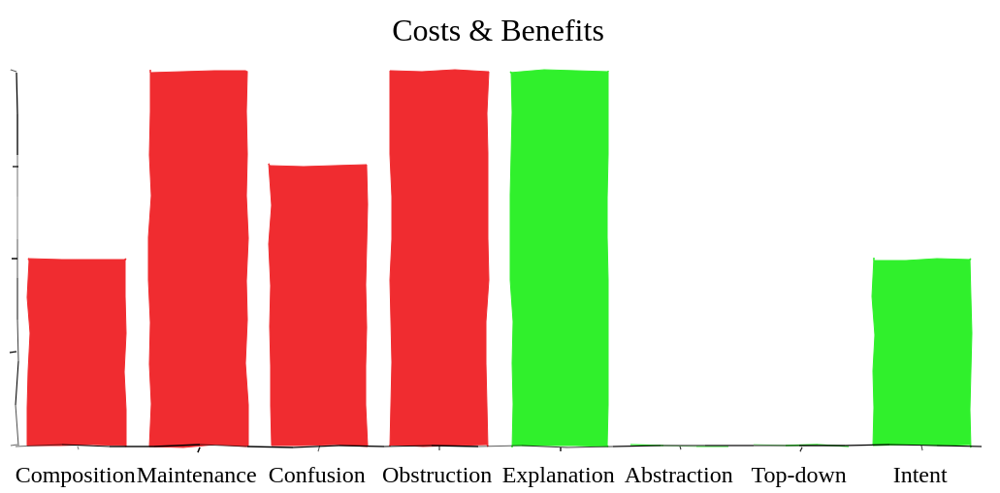
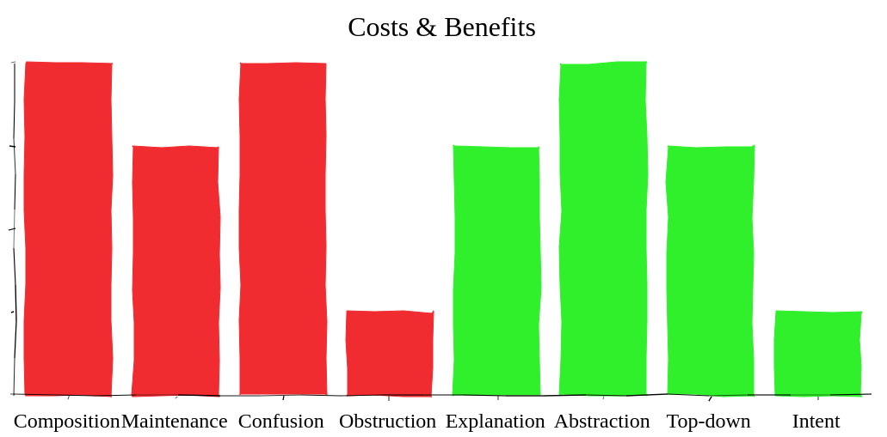
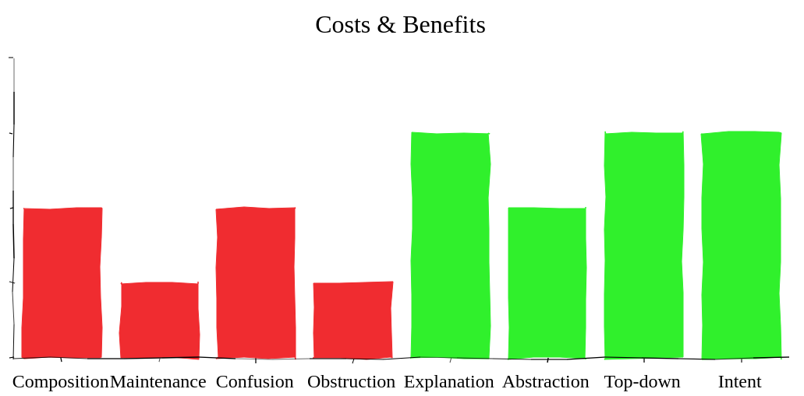
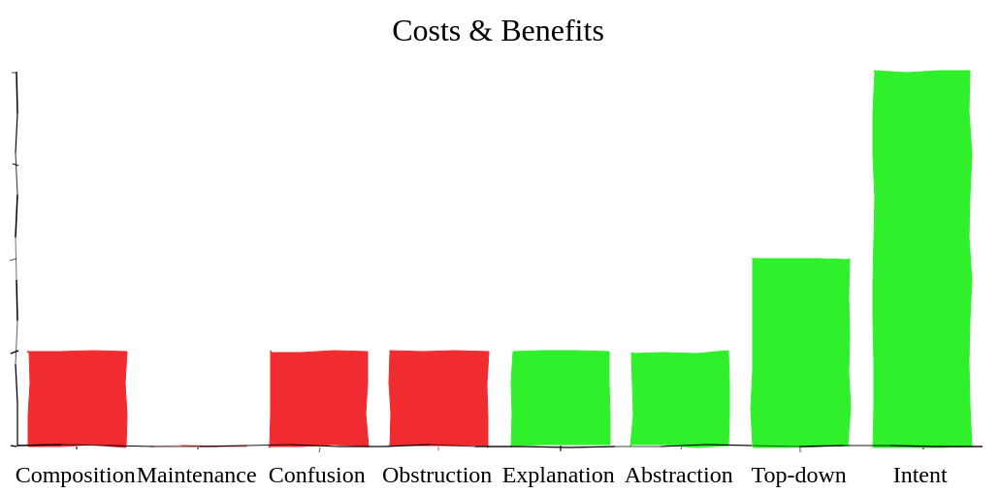

// check whether user logged in
if (user.loggedInSince(date))
// increase activeUserCount
activeUserCount++;Comment That &*☠# Code
The Axiom
Comments are always failures.
— Uncle Bob in "Clean Code"
He’s wrong!
Self-documenting code
I don’t care about the code!
I’m in a hurry,
what happens when I use it?
pre- & postconditions
return value range
side-effects
thread-safety
(im)mutability
Self-documenting code
I’m in a hurry!
good names, small methods, SOLID, …
only go so farhow many interface implementations
am I supposed to check?what if I have to implement an interface?
Self-documenting code
I care about the code!
I have to change it,
why does it look like this?
considered alternatives
code-shaping requirements
overall architecture
design principles
Self-documenting code
I have to change it!
good names, small methods, …
are almost uselessSOLID helps! 👍
ubiquitous patterns help
what about lesser known ones?
Still, most information
not expressible in code!
Tests
I care even less about the tests!
How do you test this?
"for all" propositions
thread-safety
(im)mutability
interfaces
Test coverage better be > 90%!
Tests
Tests are observations:
take time to generalize
are not a contract
only explain what, never why
Tests
Ever heard RTFT?
(Read The &*☠# Tests)
No?
What was I thinking about?
Interlude
Self-documenting code and tests are great for:
understanding little pieces of code
editing code
They are really bad for:
quickly determining expected behavior
understanding larger concepts
conveying rationale for decisions
Comments are hard
A common fallacy is to assume authors of incomprehensible code will somehow be able to express themselves lucidly and clearly in comments.
— Kevlin Henney
So is code…
A common fallacy is to assume developers incapable to express themselves lucidly and clearly in a natural language will somehow be able to write lucid and clean code.
— Yours Truly
Comments age
That’s like saying
"Car’s crash".
So? Do we get rid of them?
Crashes:
are caused by negligence
are often punishable by law
are acceptable given the benefits
Comments age
What about names?
do they age?
are they updated?
Yes?!
But comments can’t be? 🤔
The costs
| Costs And Benefits |
|
|
|
| Kinds Of Comments |
| Clean Comments |
Why most devs hate comments
initial composition
maintenance
confusion
obstruction
Initial composition
Writing a comment is harder…
the later it is done
the more complex the topic is
the more precise the comment is
Usually affordable
compared to writing code and tests.
Maintenance
What to do with comments
when code changes?
nothing ⇝ may cause confusion
update ⇝ takes time
delete ⇝ wastes past efforts
Whatever schema you decide on
maintenance is critical!
Maintenance
changing comments takes little time
but finding them can be hard
⇝ Comments and code must be close!
Confusion
Comments that are…
outdated
ambiguous
lack detail
…cause confusion!
Confusion
Costs are unpredictable
but potentially enormous!
Deteriorates trust in comments.
Obstruction
Takes up screen space.
(Fold that shit!)
Why devs really hate comments
they may be hard to write
they turn nothing green
nobody gets a pat on the back
for a clever comment
Get over it!
The benefits
| Costs And Benefits |
|
|
|
| Kinds Of Comments |
| Clean Comments |
Why some devs love comments
explain what happens
keep abstractions intact
enable top-down learning
document intent
spur redesign
save lives!
Explain what happens
Explain what happens
Duh!
intrinsically redundant
can cause confusion
May be helpful when using
arcane language features.
Keep abstractions intact
public interface Map<K, V> {
/**
* Associates the specified value
* with the specified key in this
* map (optional operation).
*/
V put(K key, V value);
}Keep abstractions intact
Every unit of code provides an abstraction:
does one thing and does it well
hides how it does it
should not require us
to look past the abstraction
The core to modularizing any non-trivial problem!
Keep abstractions intact
Abstractions provide two benefits:
reuse code
reuse understanding
Comments can help with both!
Top-down vs bottom-up
most people learn better top-down
clean code, tests, … are bottom-up approaches
Comments can be signposts,
helping to stay on
the right level of abstraction.
Document intent
public class ArrayList<E> {
// non-private to simplify nested class access
transient Object[] elementData;
}Document intent
Context is invaluable when revisiting code!
other tools may contain this info
working through them takes time
and is transient!
Comments can be 2nd line of defense.
Spur redesign
It’s funny how writing documentation can spur redesign: it’s easier to simplify a complex API than try to document it completely.
— Mike Bostok
(Source)
Spur redesign
If it takes a long time to…
describe behavior on a high level
cover all special cases
explain rationale behind a decision
…maybe the code needs to be improved.
You become your own reviewer!
Safe lives
Always code as if the guy who ends up maintaining your code will be a violent psychopath who knows where you live. Code for readability.
— John F. Woods
(Source)
Some observations
| Costs And Benefits |
|
|
|
| Kinds Of Comments |
| Clean Comments |
Looking closer…
currency
proximity
alternatives
Currency
(No, not money; "up-to-dateness")
some comments need to be very up-to-date
others can be slightly or even totally outdated
This influences costs:
maintenance
confusion
Proximity
How far can a comment be away
from what it describes?
some must basically be on the same line
others can be some classes away
because they span several concepts
It is hard to update far-away comments!
Alternatives
There are plenty of alternatives to comments:
clean code
tests, demos
version control
issue tracker
wiki
But not all work for every use case.
Narrations
| Costs And Benefits |
| Kinds Of Comments |
|
|
|
|
| Clean Comments |
What does it do?
public int activeUserCountSince(Date date) {
int activeUserCount = 0;
// loop through the users
for (User user : users)
// check whether user logged in
if (user.loggedInSince(date))
// increase activeUserCount
activeUserCount++;
return activeUserCount;
}Narrations
Usually inline comments.
explain what the code does
speak on a very technical level
Analysis
- Currency
very high, need to be absolutely up to date!
- Proximity
right on the narrated line(s)
- Alternatives
good names
transparent design
well-known patterns
Narrations

Explain the arcane
<T extends Closeable & Iterator<String>> T
createCloseableIterator() { /*...*/ }
<E, T extends Closeable & Iterator<E>> Optional<E>
firstMatch(T elements, Predicate<E> p) { /*...*/ }
printFirstDollarWord() {
var elements = createCloseableIterator();
Optional<String> dollarWord =
firstMatch(elements, s -> s.startsWith("$"));
System.out.println(dollarWord);
}Verdict
Narrations suck!
Unless all of these are met:
arcane language features are used
there is no alternative
there is no way to improve readability
Contracts
| Costs And Benefits |
| Kinds Of Comments |
|
|
|
|
| Clean Comments |
What Does It Promise?
public interface Map<K, V> {
/**
* ...............................
* ................................
* ....................................
* ....................................
*
* @return .......................
* ....................
*/
int size();
}public interface Map<K, V> {
/**
* Returns the number of key-value
* mappings in this map. ..........
* ....................................
* ....................................
*
* @return the number of key-value
* mappings in this map
*/
int size();
}public interface Map<K, V> {
/**
* Returns the number of key-value
* mappings in this map. If the map
* contains more than Integer.MAX_VALUE
* elements, returns Integer.MAX_VALUE.
*
* @return the number of key-value
* mappings in this map
*/
int size();
}Contracts
Usually JavaDoc on classes and methods.
They define:
the code’s central abstraction
pre- and postconditions
quirks
Analysis
- Currency
high
- Proximity
right on the class or method
- Alternatives
good names (limited)
tests (limited)
Contracts

Verdict
It’s complicated.
costs are high if code changes often
benefits are high if code is read often
⇝ The more stable & reused the code,
the better the outcome!
Technical context
| Costs And Benefits |
| Kinds Of Comments |
|
|
|
|
| Clean Comments |
How does it work?
/**
* When keys are Comparable, this class may
* use comparison order among keys to help
* break ties.
*/
public class HashMap<K, V> { }/**
* When keys are Comparable, this class may
* use comparison order among keys to help
* break ties.
*/
public class HashMap<K, V> {
/* This map usually acts as a binned
* (bucketed) hash table, but when bins
* get too large, they are transformed
* into bins of TreeNodes, each
* structured similarly to those in
* java.util.TreeMap. */
}Technical Context
Often non-Javadoc blocks
at the beginning of a class/method.
(Check out
@apiNote and @implNote.)
clarify what code is for
when to use it and when not
explain implementation details
(This is not a contract!)
Analysis
- Currency
not that important
- Proximity
not that important
- Alternatives
demos
existing code (limited)
Technical Context

Verdict
A clear winner!
costs are moderate
benefits are considerable
Historical context
| Costs And Benefits |
| Kinds Of Comments |
|
|
|
|
| Clean Comments |
OMG, why?!
public Color randomFavoriteColor() {
while (true)
Color favorite = randomColor();
if (isNotWhiteish(favorite))
return favorite;
}public Color randomFavoriteColor() {
while (true)
Color favorite = randomColor();
/* In China white is often seen
* as a color of mourning and
* some Chinese users did not
* like it. We hence disallow
* whitish colors as favorites.
* For details see issue #1534.
*/
if (isNotWhitish(favorite))
return favorite;
}Historical Context
clarifies why (oh why?)
code looks the way it doescan document paths not taken
Analysis
- Currency
negligible
- Proximity
not that important
- Alternatives
commit messages
issues, wikis
Historical Context

Verdict
Even better!
costs are negligible
benefits are considerable
These are great breadcrumbs
when tracking down bugs!
Emotions
| Costs And Benefits |
| Kinds Of Comments |
|
|
| Clean Comments |
(Real comments ahead; more.)
Humor
long john; // silverstop(); // Hammertime!// sometimes I believe compiler
// ignores all my commentsGuilt
// I'm sorry.Fear
// I am not sure if we need this,
// but too scared to delete.Defiance
// I am not responsible of this code.
// They made me write it, against my will.Frustration
// When I wrote this, only God and I
// understood what I was doing
// Now, God only knowsForeboding
// I dedicate all this code, all my work,
// to my wife, Darlene, who will have to
// support me and our three children and
// the dog once it gets released into the
// public.Creativity
// Replaces with spaces the braces
// in cases where braces in places
// cause stasis
$str = str_replace(array("\{","\}")," ",$str);Therapy
We’re working with unfeeling material.
Comments can be therapeutic! 😁
Clean comments
| Costs And Benefits |
| Kinds Of Comments |
| Clean Comments |
Comments are a tool
Let’s move away from:
All comments are failures.
Instead:
Comments are a tool to facilitate understanding. We should use it wisely!
Clean comments
Write clean code and good tests.
Then add clean comments:
make obvious which kind they are
strive for high proximity
use unambiguous language
consider API users and maintainers
Get comments reviewed!
Clean narrations
What?
avoid whenever possible
strive for clean code
How?
use line comments (
//in Java)place directly on line
Clean contracts
What?
describe every top-level element’s
(class, interface, endpoint, etc.)
central abstraction
From there on, it’s up for debate:
prefer stable elements
prefer reused elements
heed diminishing returns
Clean contracts
How many and how detailed
depends on many factors:
team:
size 📈
technical backgrounds 📈
stability 📉
code base:
size 📈
technologies 📈
ownership 📉
Clean contracts
How?
use tools
for Java: proper JavaDoc (
/** */)for REST: Swagger or Spring REST Docs
promise results not steps
(declarative, not imperative)promise only what is required and tested
Clean technical context
What?
non-trivial implementation
trade-off between alternatives
operational or developmental requirements
Clean technical context
How?
look into
@apiNoteand@implNotemulti-line comments (
/* */)
at start of type or methodstrive for high-level description
cite/link issues, wikis, etc.
Clean historical context
What?
non-obvious user requirements
"temporary" solutions (and alternatives)
How?
use phrases like "at the time of writing"
multi-line comments (
/* */)cite/link issues, wikis, etc.
Side note
Include non-source files:
build tooling ("Why this version of Guava?")
configurations ("Why does CI store artifacts?")
documentation (yay, recursion!)
etc.
Maintaining comments
What’s impacted when you change code?
surrounding class
callers
tests
Check comments on those elements!
("Reverse-proximity")
Maintaining comments
Pair programming? Code reviews?
Keep comments in mind!
(N.B., developers complaining of aging comments
are usually the ones letting them age.)
Clean comments
Bottom line:
avoid narrations
describe central abstractions
decide how many/detailed contracts
always provide context
Clean comments
My recommendations:
get the team together and
speak freely about commentsgo through the code base and
discuss concrete examplessettle on a shared approach and
include it in your style guideuse pair programming or code reviews
to adapt and enforce
About Nicolai Parlog

Follow
Want More?
⇜ Get my book!
You can hire me:
training (Java 8-11, JUnit 5)
consulting (Java 8-11)